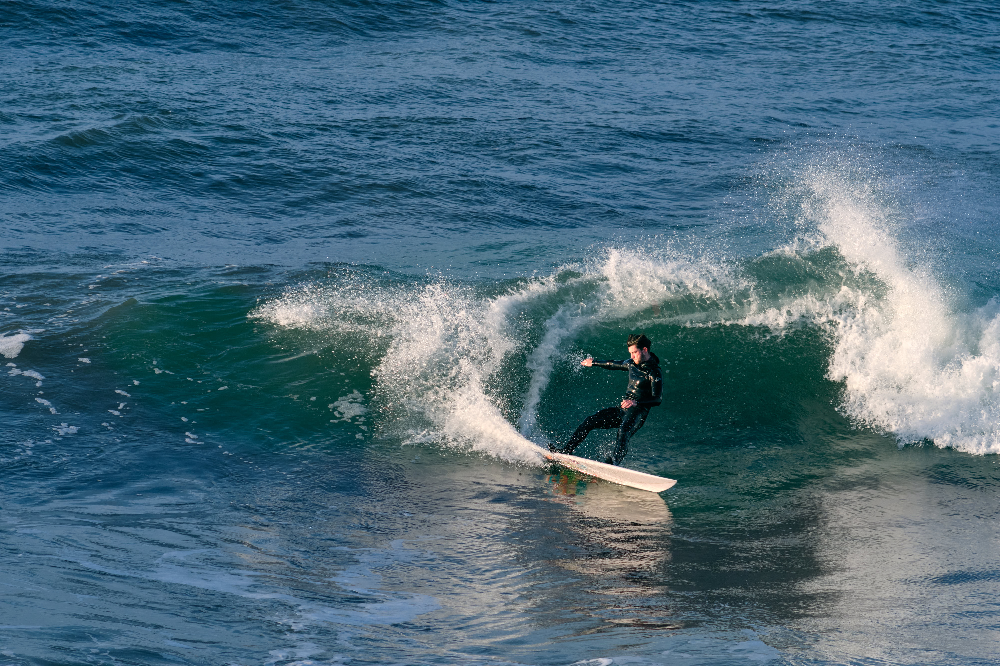
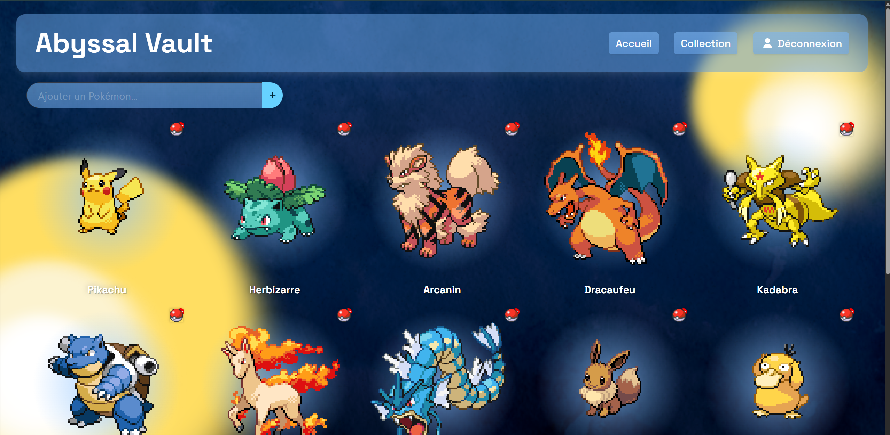

Hey, moi c’est Mathéo !
J’aime ce qui me fait peur. Passionné de surf, je suis terrorisé quand les vagues dépassent ma
taille. Mais… c'est exactement ce qui me pousse à continuer.
Je suis un aventurier qui aime découvrir de nouveaux lieux à capturer en photo ! J’ai soif de
découvrir les histoires des gens que je rencontre. C'est cette soif qui m’a mené vers
l’audiovisuel
et l'entrepreneuriat, notamment à travers le programme Fabrik ta pépite.
Je suis actuellement en BUT MMI (Métiers du Multimédia et de l’Internet) pour perfectionner mes
compétences. En parallèle, j'ai une solide expérience en audiovisuel.
Si je devais me décrire, je dirais que je suis quelqu’un de confiant, ouvert d’esprit, curieux
et
doté d’une réelle intelligence émotionnelle. On dit aussi de moi que je suis force de
proposition et
toujours motivé !
Plongez dans mes différents projets ! Et préparez-vous à vous en prendre plein les yeux… Ça vous
rappellera les vagues.

Écriture Tournage Montage Présenté au cinéma
Travail en équipe Écriture : Rédaction d’un pitch, d’un synopsis, d’un script et création du découpage technique Tournage : Gestion d’un tournage, prise de vue et de son, direction des acteurs Montage : Montage, mixage sons, étalonnage
“Le Pont du Diable” m’a profondément marqué, après 1 an à travailler dessus, c’est le projet dont je suis le plus fier. Et c’est grâce à lui que j’ai envie de travailler dans les métiers de l'audiovisuel ! J'ai développé mes compétences en audiovisuelles et en travail d'équipe.
L’idée : une boite à clé qui bloque les ondes des cartes de voiture électrique Est ce qu’elle répond à un problème réel ? La cible : Le surfeur / Le pratiquant d’activité nautique Enquête terrain Prototypage Positionnement de l’offre Business plan Réalisation d’un court-métrage promotionnel
Entreprendre et gérer un projet Concevoir un produit fonctionnel. Réaliser une enquête terrain. Positionner notre offre. Compétence oratoire, capacité à vendre et à pitcher son produit
À la base, j’avais juste envie de participer à une formation sur l'entrepreneuriat, mais je n’aurais pas pensé m’investir autant dans le projet. Sans doute parce que c’est moi qui ai eu l’idée de départ. Mais surtout car notre idée répondait à un problème réel. Mes premiers pas dans le monde de l'entrepreneuriat furent très enrichissants.
Création d’un dossier de production complet, du synopsis à la note d’intention
Repérage et préparation du tournage
Tournage : j’avais le rôle d'ingénieur du son.
Un montage peu complexe car on était limité en temps.
Tournage :
Gestion d’un tournage, prise de vue et de son, direction des acteurs
Montage :
Montage, mixage sons, étalonnage
Ce projet audiovisuel a été pour moi un peu différent car je me suis joint en cours de route au projet. Je me suis intégrée au projet, j’ai compris les idées des réalisatrices. Je pourrais me considérer comme ingénieur du son dans une grosse production, qui n’a pas été présente lors de l'écriture mais qui doit comprendre les intentions du réalisateur pour réussir au mieux son travail. Ce projet a développé mes compétences en prise de sons et en montage.

Création d’une planche univers
Choix d’un univers et réflexion des pistes graphiques
Validation du wireframe
Validation du mock-up
Retranscription du mock-up en code HTML/CSS
Déploiement sur le serveur de l’IUT de Lannion
Répondre à un brief conception de wireframe conception de mock-up en rapport avec l’univers graphique choisis Création de site web en HTML, CSS et Javascript
Je suis fier d’avoir réalisé ce site web, je suis content qu’il soit plutôt responsive grâce à Bulma, mais je suis déçu de ne pas avoir eu plus de temps pour travailler la partie JavaScript. J'ai aussi appris à rendre accessible mon site via un serveur web.
Bachelor universitaire de technologie - Métiers du multimédia et de
l'internet
Depuis septembre 2025, Institut Universitaire Technologique Lannion
Fabrik ta pépite : 3 mois pour expl'Oser ton idée !
De octobre 2025 à février 2026, Pépite Bretagne Lannion
Baccalauréat général - Mention Bien
De septembre 2022 à juin 2025, Saint-François-Notre-Dame Lesneven
Spécialité cinéma audiovisuel et numérique, science de l’informatique
Option maths complémentaire
Permis de conduire
Depuis avril 2025, Cityzen Lesneven
PIX niveau global : avancé 1
Depuis mars 2025, Saint-François-Notre-Dame Lesneven